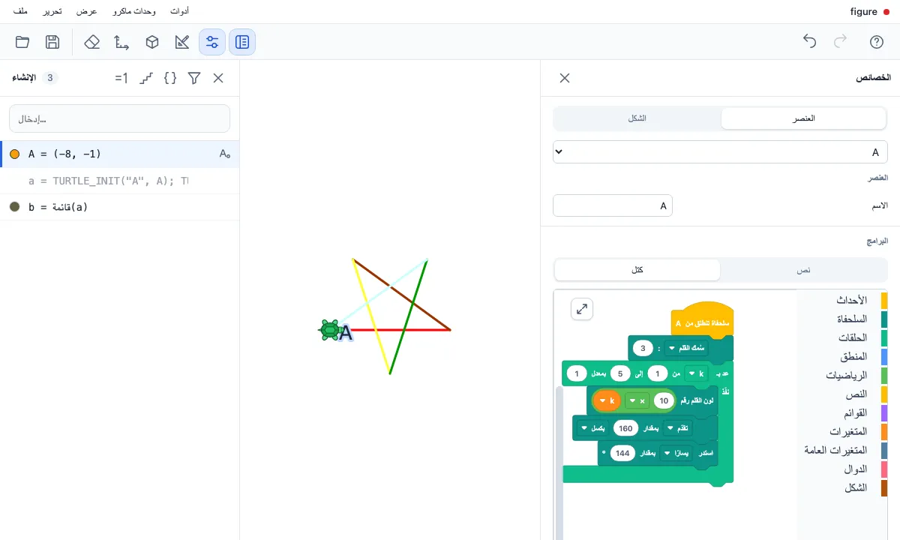
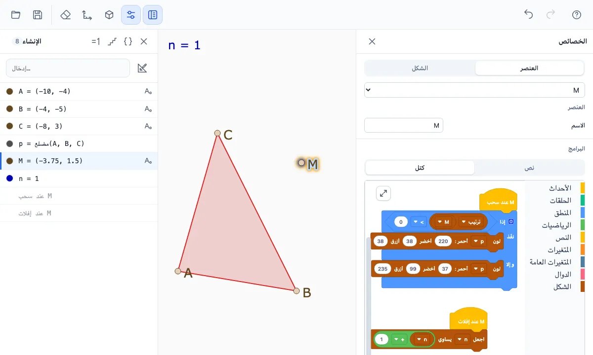
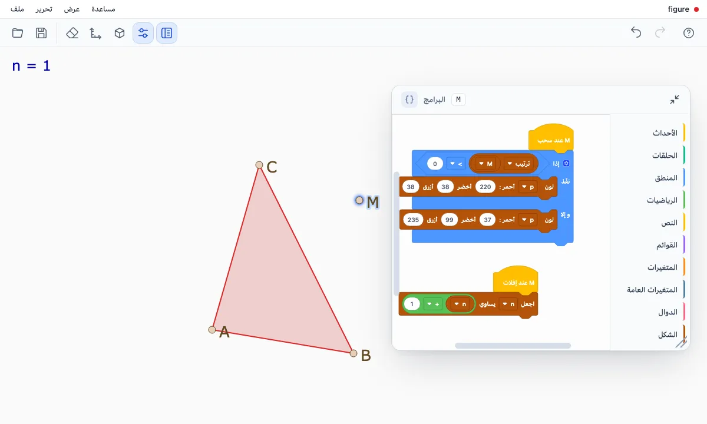

التعابير والمنزلقات
التعابير
كل سطر ليس نقطة ولا أمرًا ينشئ تعبيرًا، يُعرض في أعلى الشكل برقمين عشريين. وتُستنتج طبيعته من النص:
| السطر | الطبيعة |
|---|---|
a = 3،
list = [1, 2, 3]
|
ثابت |
t = "مرحبا" |
نص |
f = 0.5x^2 - 4 |
دالة في x (y، z، t)؛ وf(2)
يستدعيها، وf'(2) يستدعي مشتقتها
|
f(x) = ax^2 + bx + c |
منحنى الدالة، مرسومًا: يُقرأ ax على
أنه a x، وتُنشأ المنزلقات a وb وc؛ وf(2)
يستدعيها أيضًا
|
f(x) = x^2, (-1 <= x <= 2)
|
منحنى مرسوم على مجال، يُكتب كما في GeoGebra
(≤ أو <=)؛ ويمكن أن
يغيب أحد الحدّين ((x >= 0))، وأن
يكون كل حدّ صيغة ((0 <= x <= a))
|
E = d(A, B) |
قياس يُعاد حسابه عندما يتحرك الشكل |
u = "AB = " + round(d(A, B)*100)/100
|
نص محسوب |
في الصيغة، تساوي النقطة إحداثياتها، والقطعة المستقيمة طولها، والدائرة نصف قطرها، والمضلع مساحته، والزاوية قياسها. الصياغة الكاملة: الصيغ والبرامج.
يُحرَّك التعبير بسحب نصه؛ وإذا رُبط بنقطة تبعها. ولمسه يحدده، أو يكتب اسمه أثناء الإدخال.
المنزلقات
r = منزلقة(0, 5, 2): من 0 إلى 5، والقيمة 2. يمكن أن
يكون الحدّان تعبيرين أو صيغتين (منزلقة(0, d(A, B), 1)). والخطوة والطول والاتجاه والمقبض والتحريك تُضبط في
الخصائص. وr = 5
يعيدها ثابتًا. وعند تحديدها، تُحرَّك أيضًا
بالنابض.
الاسم غير المعروف الذي يبدأ بحرف صغير ينشئ منزلقة من −5 إلى 5،
خطوتها 0.1 وقيمتها 1: A = (a, 4)،
d = y = m x + p. والحرف اليوناني ينشئ زاوية من 0
إلى 360°، خطوتها 1° وقيمتها 45° (من 0 إلى 2π بالراديان):
P = (3; α). والسطر المرفوض لا يحتفظ بمنزلقاته.
النقاط المحسوبة
M = (x(B) + 1, y(A)): إحداثيات تعطيها صيغ.N = نقطة(2*B - A): صيغة قيمتها نقطة.-
P = (3; 60°): إحداثيات قطبية، نصف القطر والزاوية.
عندما تكون قيمة سطر name = formula نقطة أو قائمة
نقاط، تقترح أزرار في نهاية السطر
نقطة،
قائمة نقاط،
قائمة قطع مستقيمة أو
تعبير. ويأخذ Enter
الزر المضاء: نقطة أو قائمة لاسم بحرف كبير، وتعبير لغيره. ومن هنا
list = [1, 2, 3] وليس L = [1, 2, 3]
الذي سيُقرأ نقطة في الفضاء.
قوائم النقاط
q = قائمة(pts) يرسم نقاط التعبير pts؛
والنقطة غير المعرّفة تقطع الرسم. والتعبير المحدَّد الذي قيمته
قائمة نقاط يقترح أيضًا و
في منطقة السياق (و
لقيمة هي نقطة): يُكتب السطر
ويُخفى التعبير.
المتتاليات
L = متتالية((k, k^2), k, -2, 2) تضع النقاط (k, k²)
لقيم k من −2 إلى 2 بخطوة 1؛ ويحدد وسيط خامس خطوة أخرى. يمكن أن
يكون العنصر أيضًا عددًا، أو قطعة(P, Q)، أو
مستقيم(P, Q)، أو دائرة(O, r)، أو
مضلع(A, B, C, …)، ووسائطها صيغ في k:
متتالية(دائرة(A, k), k, 1, 3). في الفضاء، يحدد وسيط
ثالث الاتجاه u لمحور الدائرة، العمودي على مستويها:
دائرة(O, r, u).
يمكن أن تحتوي متتالية على أخرى تقرأ حدودها متغير الأولى:
متتالية(متتالية((i, j), j, 1, i), i, 1, 4). في
صيغة، تُقرأ قائمة النقاط باسمها بدءًا من 0: L[0]،
L[k-1]، وL[i][j] للمتتاليات المتداخلة،
وL.length لعدد عناصرها. اكتب 2*i:
فـ2i عدد مركب.
البرامج
يمكن أن يكون التعبير برنامجًا: تعليمات يفصل بينها
;، وآخرها يعطي القيمة؛ ويمكنه تنسيق عناصر أخرى
(S1.setHidden(1)). اللغة:
الصيغ والبرامج.
- (لوحة الأدوات، مجموعة «برامج») يفتح برنامجًا فارغًا؛ وإنشاء أو Ctrl Enter ينشئ التعبير.
- لتعبير موجود، يحرر قسم التعريف في الخصائص النص على عدة أسطر: Enter يحافظ على الإزاحة، وTab يزيح، و} يلغي الإزاحة، وCtrl Enter يطبّق، وEsc يستعيد، وتنسيق يزيح حسب الأقواس المعقوفة.
- يحدد الخطأ السطر الخاطئ أو المحدِّد غير المقترن.
الكتل والسلحفاة
يُكتب البرنامج أيضًا بالكتل: ينتقل قسم التعريف من نص إلى كتل. تُسحب الكتل من الفئات (الحلقات، المنطق، الرياضيات، النص، الاستشعار، القوائم، المتغيرات، المتغيرات العامة، الدوال، الشكل) وتُثبَّت تحت كتلة برنامج؛ وتعطي كتلة أرجع القيمة. يُطبَّق كل تغيير فورًا ويُتراجع عنه كغيره. يعرض النص والكتل البرنامج نفسه، ويُحفظ الاختيار للبرامج التالية.
تُنشأ المتغيرات العامة، التي تتشاركها جميع برامج الشكل، من فئة المتغيرات العامة بـإنشاء متغير عام…؛ ويضبطها البرنامج أو يزيدها أو يقرؤها. في المصنف، تكون مشتركة بين جميع صفحاته: للمتغير العام الذي يُضبط في صفحة القيمة نفسها في الصفحات الأخرى.
في فئة القوائم، تقرأ الكتلة L [ i ] العنصر رقم i من قائمة، والأول هو رقم 1، وتغيّر الكتلة L [ i ] = v عنصر متغير أو متغير عام.
تقرأ الكتلة آخر عنصر في آخر عنصر من قائمة؛ وتُطيل أضف … إلى نهاية قائمة متغير، وتُقصّرها احذف العنصر الأول من (أو الأخير). وتقطع الكتلة اقطع القائمة الخط الذي ترسمه قائمة نقاط، كقلم السلحفاة المرفوع: تبدأ النقاط المضافة بعدها خطًا جديدًا.
في فئة الحلقات، توقف الكتلة انتظر … ms برنامج زر مؤقتًا، ويُعاد رسم الشكل في أثناء ذلك: ما يكفي للتحريك خطوة خطوة. ولمس الزر من جديد يوقف البرنامج الجاري.
في فئة الاستشعار، تطرح الكتلة
اسأل … وانتظر سؤالًا وتوقف البرنامج حتى
الإجابة، التي تُكتب في حقل وتُؤكَّد بـ OK أو Enter؛ ثم تقرأها
الكتلة الإجابة، عددًا إن كانت عددًا
(12.5)، وإلا نصًّا. لكل تشغيل للبرنامج إجابته
الخاصة.
في فئة الدوال، يمكن للدالة أيضًا أن تعطي قيمة: تُنشئ الكتلة إلى … يرجع كتلةً تستدعيها وتوضع حيث توضع القيمة. متغيرات البرنامج تتشاركها دواله، إلا في دوال أشكال DGPad التي تحتفظ لنفسها بالمتغيرات التي تعيّنها، كما في DGPad.
تعطي فئة الشكل أيضًا زاوية ثلاث نقاط (زاوية 180°، بين 0 و180°، أو 360°، موجّهة)،
وعرض النافذة، والوحدة بالبكسل،
وسائر مقادير العرض؛ وتضع أسهم … أسهمًا عند
أطراف قطع قائمة (الطول والعرض بالبكسل). وتستقبل الكتلة
تعبير صيغة مكتوبة، مثل f(t) لحساب
دالة من الشكل. وفي فئة النص، تعرض
اعرض الرسالة رسالة.
سلحفاة، في المنطقة السياقية لنقطة، تُنشئ السلحفاة التي تنطلق من هذه النقطة وتفتحها بالكتل. تتقدّم (بالبكسل أو بالوحدات)، وتستدير (بالدرجات)، وترفع القلم أو تُنزله، وتغيّر اللون والسُّمك، وتملأ، وتكتب، وتتجه نحو نقطة أو تذهب إليها. يتبع رسمُها، وهو قائمة، النقطةَ والعناصر التي يقرؤها البرنامج. ما دام برنامجها معروضًا، تُرسم السلحفاة حيث تنتهي، متجهة في اتجاهها (سهم في الفضاء، أخضر حين يكون ظهرها مواجهًا لك): وكل كتلة تُضاف تُريها تتقدّم أو تستدير.

تُفتح سلاحف أشكال DGPad بالطريقة نفسها: عند فتح لوحة الخصائص،
المس سطرها blk_turtle_exp_… في لوحة «الإنشاء».
ويبقى البرنامج الذي فيه تعليمة بلا كتلة نصًّا.
تشغّل أزرار أشكال DGPad (سهم تليه تسمية) برنامجها عند لمسها، حتى عند فتح لوحة الخصائص: فيُجرَّب البرنامج أثناء تعديله. لمس دائرتها ذات النقاط الثلاث يحدّد الزر، وسحبها ينقله؛ و الإعدادات، في المنطقة السياقية، يفتح برنامجه بالكتل. الكتلة اجعل … يساوي من فئة الشكل تغيّر قيمة تعبير.
تُنشأ السلاحف والأزرار أيضًا من لوحة الأدوات، عائلة
برامج:
سلحفاة تنطلق من النقطة المحددة (الموضع الفارغ
ينشئ نقطة)، و زر يوضع في
الموضع المحدد؛ وكلاهما يفتح برنامجه بالكتل فورًا. عند كتابة
زر("تشغيل") في سطر الإدخال يُنشأ زر في وسط العرض؛
وسطره في لوحة «الإنشاء» يغيّر تسميته.
برامج الأحداث
كما في Scratch، يمكن لبرنامج أن يستجيب لحدث: نقطة قابلة للسحب تُسحب أو يُضغط عليها أو تُفلت، أو تعبير تتغيّر قيمته. ينسّق البرنامج كائنات، وبالكتلة اجعل … يساوي يغيّر قيمة تعبير أو يضع نقطة حرة. ويعمل برنامج «السحب» أيضًا أثناء تحريك النقطة تلقائيًا.
في لوحة الأدوات، عائلة برامج، تحدّد عند سحب الكائن و عند الضغط على الكائن و عند إفلات الكائن نقطة قابلة للسحب، و عند تغيّر القيمة تعبيرًا. يُفتح البرنامج بالكتل تحت كتلة البداية، مثل عند سحب M؛ وإن كان موجودًا يُعرض.

هنا، سحب M يلوّن المثلث بالأحمر فوق محور الفواصل وبالأزرق تحته؛ وإفلاتها يزيد n بمقدار 1.
- يعرض قسم البرامج في خصائص نقطة أو تعبير كل برامجه، ومنها سلحفاته، كلٌّ تحت كتلة البداية الخاصة به وقابلًا للتعديل. ويعرض نص آخر برنامج نُقر فيه.
- من دون برنامج، يفتح إضافة برنامج فئة الأحداث: سحب كتلة بداية إلى مساحة العمل ينشئ البرنامج.
-
لكل برنامج سطره في لوحة «الإنشاء»، مثل
عند سحب M: لمسه يفتحه. - سحب كومة إلى قائمة الفئات، أو حذف كتلة بدايتها، يحذف البرنامج.
- نقر بالزر الأيمن على كتلة بداية: طيّ الكومة لا يُبقي إلا هذه الكتلة، مع شارة تعطي عدد كتلها؛ ونقرة على الشارة أو توسيع الكومة تعيد فتحها.
الزر أعلى الكتل يكبّرها فوق الشكل، في نافذة شفافة: تختفي اللوحات ويبقى الشكل في مكانه. تُحرَّك النافذة من شريط عنوانها (نقرة مزدوجة تعيدها إلى مكانها) ويُغيَّر حجمها من زاويتها؛ والزر نفسه يعيد الكتل إلى اللوحة.

برامج الأحداث في أشكال DGPad (سحب نقطة والضغط عليها وإفلاتها، تغيّر قيمة) تُفتح وتُعدَّل بالطريقة نفسها.
يُنفَّذ برنامج الفتح لتعبير أو لزر في شكل DGPad مرة واحدة عند فتح الشكل؛ ويظهر تحت كتلة البداية عند فتح الشكل.